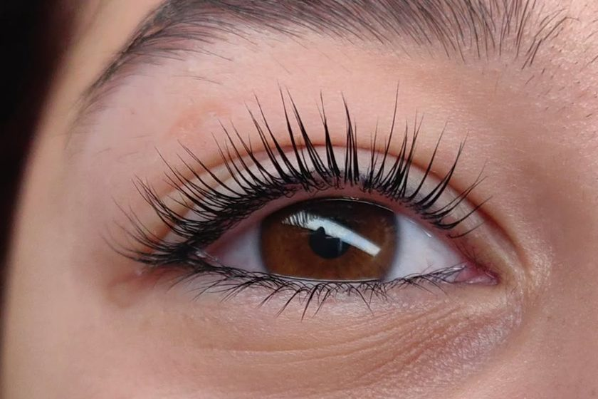
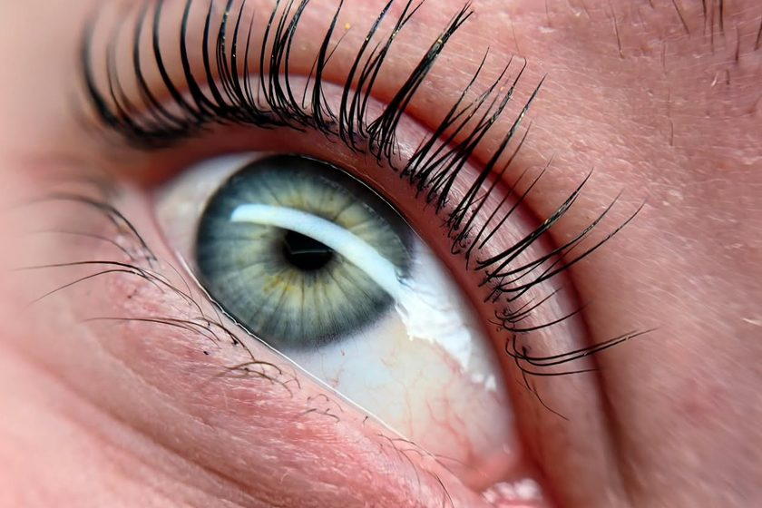
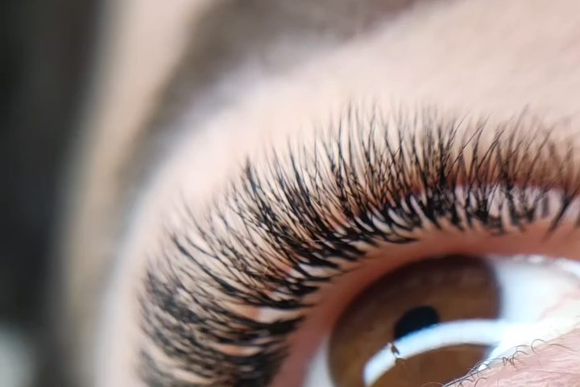
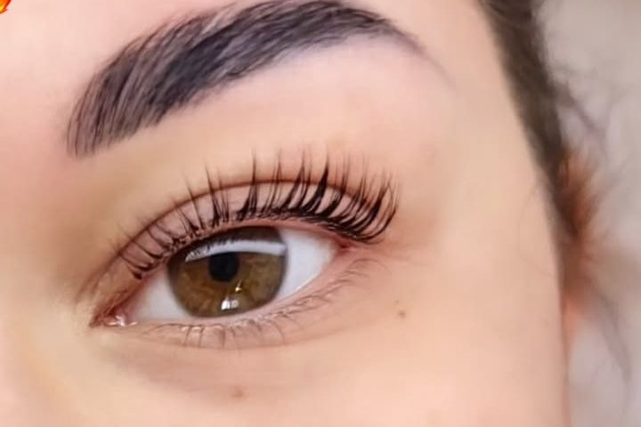
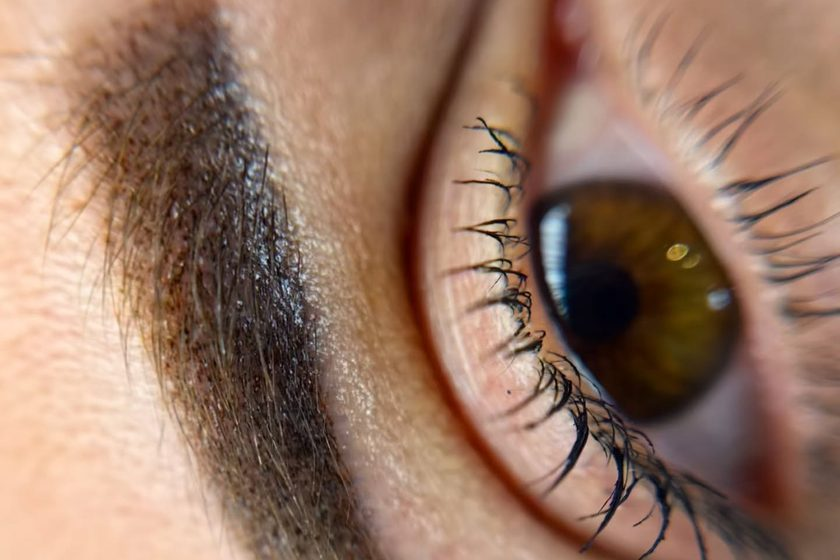
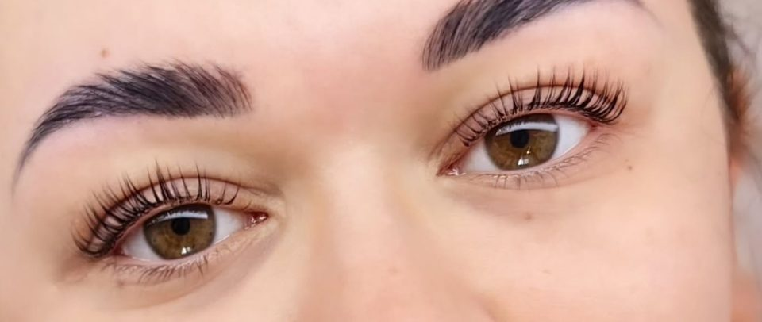
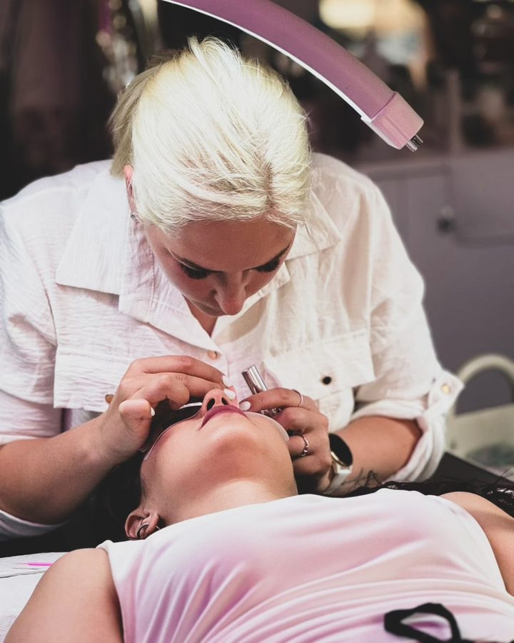
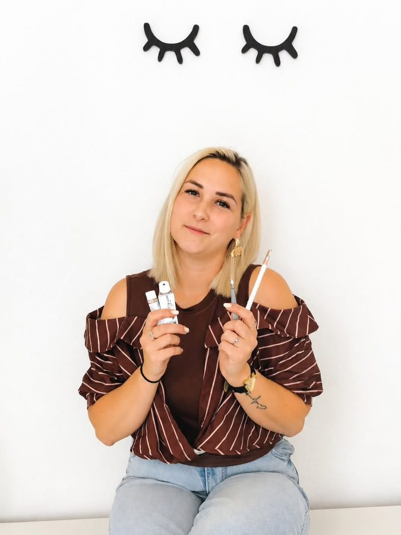

Moj ljubljenček
Lash filler
Naravno zavihane, pobarvane in nahranjene trepalnice. Rezultat drži 6 do 7 tednov, maskare pa skoraj ne boš več potrebovala.
52 €
Trepalnice in obrvi · Cerknica
Sem Karolina. Pri meni dobiš lepe trepalnice in obrvi, zraven pa še pogovor, smeh in boljši občutek, s katerim odideš domov.
Karolina TrohaInLei ambasadorka
Storitve
Vsak obisk začnem s kratkim posvetom in ti iskreno povem, kaj bi ti najbolje pristajalo.

Moj ljubljenček
Naravno zavihane, pobarvane in nahranjene trepalnice. Rezultat drži 6 do 7 tednov, maskare pa skoraj ne boš več potrebovala.
52 €

Nežna tehnika
Nežna tehnika z mehkim, lepo definiranim privihom za bolj odprt in svež pogled. Trepalnice ob tem neguje in zaščiti.
60 €

Klasično, volumen ali sprint
Klasično za naraven videz ali ruski volumen za močnejšega. Če ti primanjkuje časa, je tu lash sprint: 60 minut za nežen videz, podoben maskari.
od 35 €

Laminacija, oblikovanje, barvanje
Rišem, dokler oblike ne potrdiš, in nikoli ti jih ne bom prepulila. Pri prvi laminaciji izberem odtenek svetlejšo barvo, da se navadiš.
od 25 €

Permanentni make-up
Obrvi z mehkim, pudrastim učinkom, ki ostanejo videti naravne. Na barvico lahko pozabiš, obliko in odtenek pa dorečeva pred postopkom.
190 €

Najbolj zaželen paket
Najlepša pot do naravnega videza. Oboje naredim hkrati, zato prihraniš čas in še nekaj evrov.
82 € 99 €
Cenik
Cenik velja od 1. 9. 2026.
Galerija
Ta stavek pred ogledalom slišim najraje. Nekaj pogledov iz salona:
O meni
Ko sem delala v banki, sem med pavzami hodila na podaljševanje trepalnic in ves termin razmišljala, kako ji uspe lepiti na moje trepalnice. Vprašala sem jo, kam na tečaj, in tako se je začela moja pot.
Naredila sem tečaj, zamenjala službo, v enem letu končala kozmetično šolo in po prvi nosečnosti odprla svoj salon. Danes mi je to delo meditacija in mir.
Trudim se, da stranki polepšam dan s celotno izkušnjo, ki jo dobi pri meni.
Glasba v ozadju, kot da sediš nekje na testeninah v mali ulici v Italiji, smeh strank, rožice in mali rituali ob smutiju.
Želim, da se pri meni počutiš domače, lepo in mirno. Da odideš ne samo z lepšimi trepalnicami, ampak tudi z boljšim občutkom.

Nasveti
Katero tehniko izbrati? Bo pri meni sploh kaj poznati? Vprašaj karkoli ali pridi na kratek posvet, če se ne moreš odločiti.

Zlat nasvet. Če si za prvič ne želiš prevelike spremembe, začni pri vihanju trepalnic, ki je najbolj naravno, potem pa stopnjuj od klasičnega do volumenskega podaljševanja.
To slišim zelo pogosto. Naravne trepalnice so na konicah svetle, zato so videti krajše, kot so v resnici. Ko jih zavihava in pobarvava, dobiš takojšen vtis daljših trepalnic. Barva se na njih obdrži 5 do 7 tednov.
Če se tega držiš, prideš po 7 tednih nazaj z lepimi, še vedno zavihanimi trepalnicami.
Ne. Če je postopek pravilno izveden, s kvalitetnim materialom, in če upoštevaš nego, so trepalnice nahranjene, zaščitene in vsakič močnejše.
Trepalnice rastejo in odpadajo, imajo svoj cikel rasti, spomladi in jeseni še hitrejšega. Včasih so dolge in enakomerne, včasih so vmes »baby trepalnice« in zavihanost ni tako enakomerna. Pri lash fillerju delam s tvojimi naravnimi trepalnicami, zato je tudi rezultat naraven.
Vsakič, ko prideš iz morja, jih speri z navadno vodo. Tako ostanejo dlje časa lepe in obstojne. Vroč avto je zanje kot savna, zato ga najprej malo ohladi.
Poslušam tvoje želje in narisano popravljam, dokler oblike ne odobriš. Pri laminaciji grem prvič z odtenkom svetlejšo barvo ali pa prvič sploh ne barvava, da se navadiš. Pri powder brows barvo in obliko dorečeva pred postopkom.
Bolečina je res minimalna. Svetujem, da termin izbereš izven časa menstruacije in da se pred njim dobro naspiš.
Januar 2027
Eno leto sem se vsak dan vozila mimo in si govorila: enkrat bom pa tukaj. Zdaj sanje postajajo resničnost.
Naslov novega salona: dodamo
Za darilo
Pakiranje darilnih bonov je moje najljubše opravilo. Razveseli nekoga, ki si zasluži malo razvajanja.
Vrednosti darilnih bonov: dodamo
Kontakt
Pokliči me ali mi piši na Instagramu, pa najdeva termin zate.
Za nohte skrbi Aida: @lareina_aida
Za termin me pokliči ali mi piši.
Demo predogled